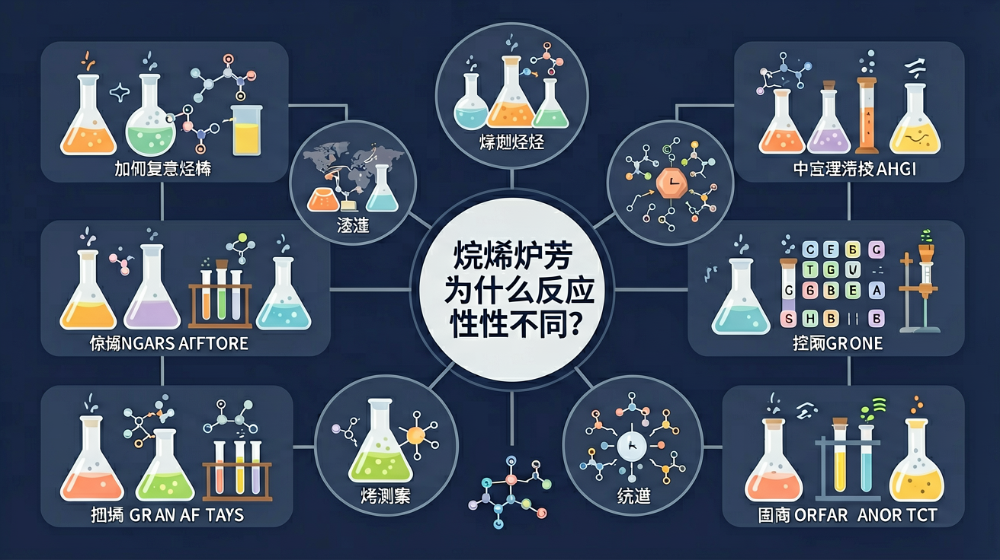

真实情境
汽车维修间的燃料选择
汽修店师傅发现不同车辆燃料罐残留物差异显著：柴油车罐底有黑色胶状物，汽油车罐壁有浅黄色结晶，天然气车罐体清洁。师傅疑惑这些现象是否与燃料的分子结构有关。
已有经验
学生已掌握烃类基本分类（烷烃、烯烃、炔烃、芳香烃）和σ键/π键概念
真正卡点
难以从电子云密度角度解释π键对反应活性的影响
本课任务
分析不同烃类的键能差异与典型反应类型的关系
为什么乙烯能使溴水褪色，而甲烷通常不能？
乙烯的特征结构是？
本课任务：用分子模型对比单键、双键、三键几何，整理烷/烯/炔/芳香烃的分类、代表反应与鉴别方法表。
写清自变量、因变量和至少两个保持不变的条件，避免同时改变多个因素后无法归因。
至少记录三组带单位的数据或三个可复查的现象，不用“变大了”“更明显”代替证据。
用本课公式、粒子模型或受力关系解释趋势，并指出结论成立所依赖的模型条件。
换一个参数或真实情境预测结果，再用仿真检验；若不一致，回查变量、单位和边界条件。
苯环碳碳键等同、介于单双键之间，难加成易取代。烃完全燃烧生成 CO₂ 和 H₂O，含碳量越高燃烧火焰越明亮、越易冒黑烟。书写燃烧方程式注意配平氧气。
苯的化学性质是？
取代反应中氢或原子团被替换并生成小分子（如烷烃卤代生成 HX）；加成反应不饱和键打开、原子加到两端，无小分子生成。溴水/酸性高锰酸钾可检验不饱和性（褪色）。判断类型看键变化与是否有小分子副产物。
能因加成使溴水褪色的是？
烃只含碳氢。烷烃为饱和烃（碳碳单键），烯烃、炔烃为不饱和烃（含双键、三键），芳香烃含苯环。饱和烃主要发生取代，不饱和烃易加成。分类先看碳碳键类型与是否含苯环。
下列属于不饱和烃的是？
汽修店师傅发现不同车辆燃料罐残留物差异显著：柴油车罐底有黑色胶状物，汽油车罐壁有浅黄色结晶，天然气车罐体清洁。师傅疑惑这些现象是否与燃料的分子结构有关。
学生已掌握烃类基本分类（烷烃、烯烃、炔烃、芳香烃）和σ键/π键概念
难以从电子云密度角度解释π键对反应活性的影响
分析不同烃类的键能差异与典型反应类型的关系
先选一个你关心的问题。后面的例子、提示和 AI 学伴都会围绕这个问题来帮你推进。
选择或输入后，本课会围绕你的问题展开。

只含 C-C 单键和 C-H 键，化学性质较稳定，典型反应有燃烧和取代。
烯烃含 C=C，炔烃含 C≡C，π 键较活泼，易发生加成。
苯环具有特殊稳定性，常发生取代反应而不是简单加成。
烷烃饱和，主要取代反应；烯烃含 C=C，易加成、加聚、氧化；炔烃含 C≡C，也能加成；芳香烃有苯环，苯易取代、难加成、可燃烧。通式与含碳量帮助判断燃烧通式与耗氧量。
无官能团饱和→取代；有双键三键→加成/加聚；苯环→特殊的取代与加成条件。鉴别烯烃可用溴水或酸性高锰酸钾褪色（苯一般不行）。
常见误区：常见误区是认为苯与溴水也易加成褪色。苯与溴水不反应（可萃取），需催化剂与液溴取代。
下列最易使溴水因加成而褪色的是？
记忆锚点：烃类先看键：单键烷，双键烯，三键炔，苯环芳。
易错提醒：常见错误：看到分子式含 C、H 就认为反应一样。结构中的键类型才决定典型反应。
理解不同烃类结构特点与反应性的关系，掌握烷烃取代、烯炔烃加成、芳香烃取代的典型反应特征
乙烯使溴的四氯化碳溶液褪色实验：将乙烯通入橙色溴的四氯化碳溶液，溶液迅速褪色，证明C=C双键发生加成反应生成1,2-二溴乙烷
分析反应类型三步法：一看官能团（单键/双键/三键/苯环），二记特征反应（取代/加成/加聚），三写典型方程式
易混淆苯的取代与加成条件：苯与液溴在FeBr3催化下发生取代，而与氢气加成需Ni催化且高温高压，不能写反条件
课堂任务：请用“现象/文本/地图/实验数据 → 关键证据 → 学科解释 → 迁移应用”四步，重写一个关于「烃：烷烯炔芳为什么反应性不同？」的新问题。
不要只看结论。动手改变变量后，再用一句话解释画面为什么变了。
识别并写出本节核心定义、公式或分类标准。
把本课标准用于一个实验数据或真实生活场景。
设计一个反例，说明常见错误为什么站不住脚。
如果你能解释“为什么乙烯能使溴水褪色，而甲烷通常不能？”，这节课就真正过关了。